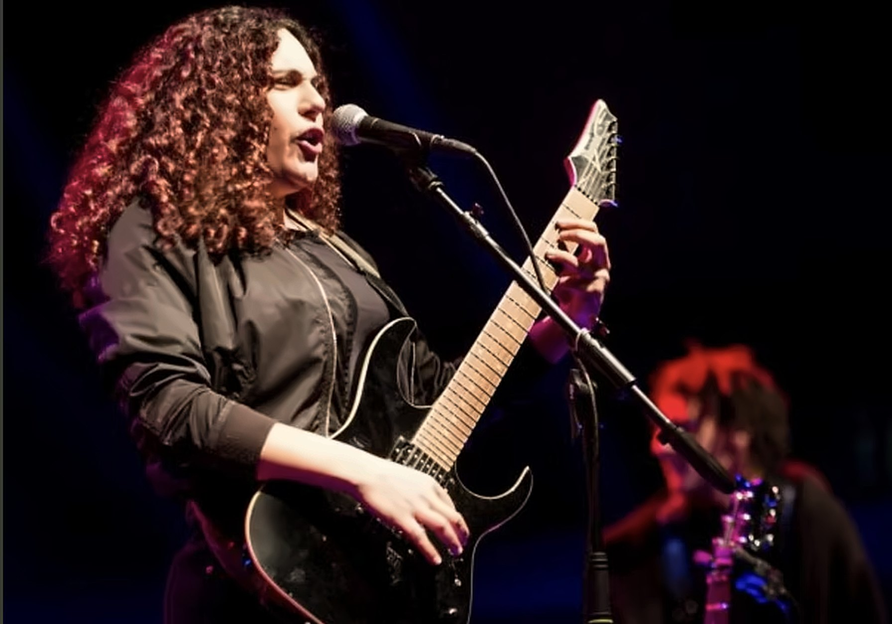
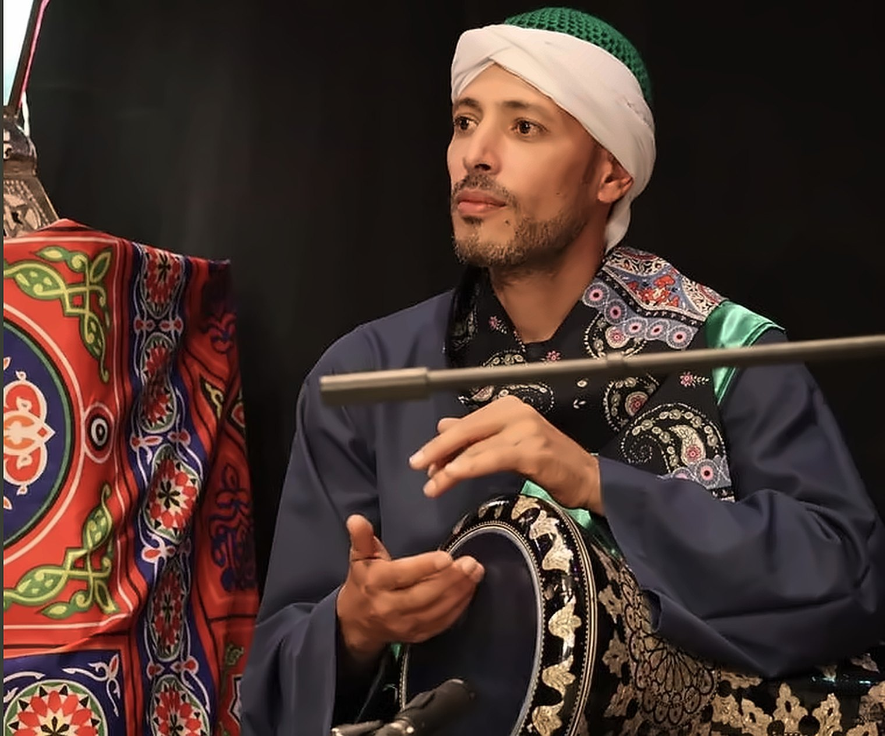

In December 2021, I flew from Canada to Egypt to attend a 20-day residency with Zar musicians (with the help of the community connector Kawkab Tawfik) to learn traditional zar songs, complex polyrhythmic rhythms and to explore the possibility of creating an EP that blends metal music with Zar. One particular Zar ensemble felt a connection with my music; they are called Zar Abu Al-Gheit and are led by Mohammed Abouzied.
Zār is a cult of possession in which ritual incorporates music and dance. Zar’s aim is to establish a state of reconciliation between the individuals and the possessing spirits (Assyad) that inhabit their bodies and are believed to be the cause of illness. The Assyad are considered a projection of fears and anxieties; the ritual thus seeks to alleviate the suffering, challenges, and conflicts faced by the person in their life. At the center of the Zār ceremony, an ensemble takes charge of guiding the Zār devotees, engaging them in the trance dance through a cathartic process. The repetitive and distinctive rhythmic and melodic patterns of the music, deeply embedded within an emotional and cultural context, break down the barriers that restrict personal identity (Rouget 1980:142); as a result, the person in a trance identifies themselves with the possessing spirits, giving them the ability to live in the sensory and material world. The Abul Gheil Ensemble, led by Muhammed Hussein Abuzayd, plays a crucial role in the continued social and cultural acceptance of Zar by integrating it into Sufism. He applies Sufi’s oral texts to zar rhythms, using the musical instruments of the Sufi tradition. This integration preserves its rich cultural heritage while providing a unique glimpse into the spiritual beliefs of the region.
In 2023, I united metal and Zār musicians for a three-week residency in Montreal, QC. We held music workshops to refine our collaboration, resulting in an interactive show at Le Petit Campus on August 18, 2023, and the EP Assyad, which blends traditional Zār songs and rhythms with metal. Each track is inspired by a specific Zār spirit.

